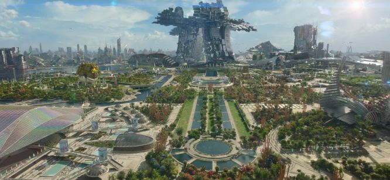
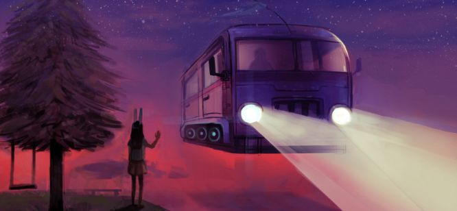

<!DOCTYPE html>
<html lang="en">
<head>
    <meta charset="UTF-8">
    <meta http-equiv="X-UA-Compatible" content="IE=edge">
    <meta name="viewport" content="width=device-width, initial-scale=1.0">
    <title>Document</title>
</head>
<body>
    
</body>
</html>
<header>
    
    <h1>webcomics</h1>
</header>
<h1>Comment combattre le Co2
    émis par les gardiens ?</h1>
    
    <p>A-t-on des solutions à tout cela ? Y'a t-il des possibilités pour
        ralentir le réchauffement et toute cette pollution carbone ?
        Oui ! Il y en a. Et vous pouvez y participer un peu chaque jour !
        Cela ne changera pas forcément grand chose dans votre
        quotidien. Pourtant ça aura un grand impact à l'échelle
        planétaire si l’on s’y met tous ! </p>
        <h1>De nombreuses solutions, à grande</h1>
        <p>À l'échelle de la société et du monde on peut inventer
            beaucoup de solutions. </p>
            <h3>   Dans le commerce</h3>
            
            <p>Par exemple préférer le transport des marchandises de
                masse par un seul transporteur. Le train paraît être une
                bonne solution au lieu des multiples camions. On pourrait
                n’utiliser que les camions en local depuis les gares. Cela
                réduirait le nombre de camions sur les routes. et par
                conséquent les émissions Co2 de ceux-ci également. De
                plus cela permettrait de réduire le trafic routier. Ce qui ferait
                diminuer encore la pollution en éliminant certains
                bouchons. Tout cela au détriment du court temps de
                livraison que nous avons su atteindre.</p>
                <h3>     Moyens de transports</h3>
                
                <P>Tout ce Co2 contribue au réchauffement climatique à cause
                    de l’effet de serre. Vous n‘avez jamais entendu parler de
                    l’effet de serre en 2019 ? Vous vivez certainement dans une
                    grotte sur une autre planète ! Quoiqu’il en soit je vais vous
                    réexpliquer un peu comment ça marche. Pour résumer
                    rapidement le problème, il faut comprendre comment ça se
                    passe là haut. </P>
                    <H3>  Une autre société ?</H3>
                    
                    <p>Enfin, une autre solution est possible d’après Yannick
Roudaut pour réduire nos émissions.
Cette solution qu’il explique dans son livre “Zéro pollution”
s’applique pour le Co2. Mais Yannick va plus loin et parle
d’une réduction de tous les polluants. Selon lui,
En effet, on pourrait réduire définitivement la pollution de
manière conséquente. Il faudrait pour cela bâtir une
nouvelle société s’inspirant de la nature. Une société qui
saurait conserver l’équilibre fragile de notre monde.

"le biomimétisme, est la voie de la réconciliation
avec le vivant"</p>
<h3>Les transports en communs
</h3>

<p>Pour les moins sportifs il y a aussi des solutions ! (oui oui,
    vous n'êtes pas épargnés). Les transports en communs sont
    également très développés dans la plupart des villes.
    Prendre le bus ou le tramway ne coûte souvent pas très
    cher. Généralement moins que de prendre sa propre voiture
    pour aller travailler. De plus, cela permet de faire des
    économies niveau pollution ! Alors on fonce dans le bus !</p>
    <h3>   Le covoiturage</h3>
    
    <p>Enfin pour les plus longs trajets, le covoiturage est l’idéal en
        ce moment. Il existe beaucoup d’applications, de lieux et
        d’aménagement pour ce genre de transports. De plus, les
        personnes s’y étant essayées sont souvent ravies de leur
        voyage ! Pourquoi ne pas tentez l’expérience ?</p>

<p>Tout ça reste ennuyeux pour nos gardiens… Les trottinettes
    électriques de l’espaces ne suffiront sûrement pas à assurer
    leurs déplacements. Peut-être qu’un bus interplanétaire serait
    envisageable ?
    </p>
    <h2>Découvrez d'autres projets !</h2>
    <p>Si cet article vous a plu, vous pouvez aller voir d’autres
        projets similaires</p>
        <button><p>À découvrir aussi</p></button>
        <footer>
            
            <h3>me contacter</h3>
            ^<h3>PierrePolJ</h3>
            <p>Projet réalisé dans le cadre d’un exercice pédagogique
                au département MMi de Montbéliard</p>
        </footer>
